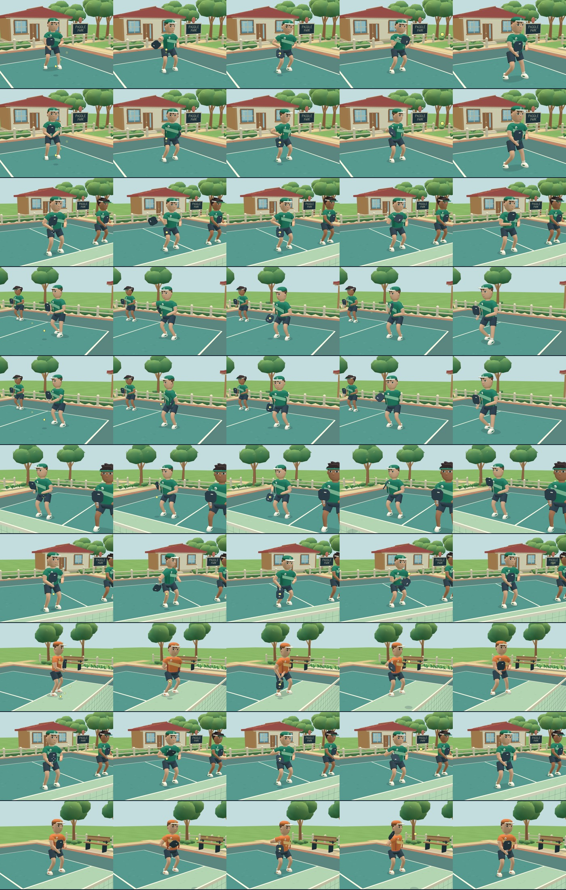
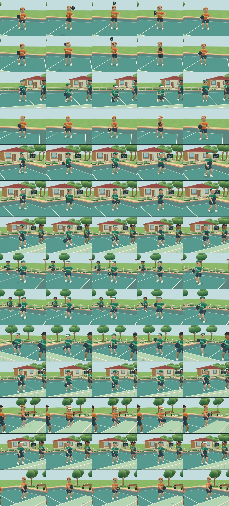
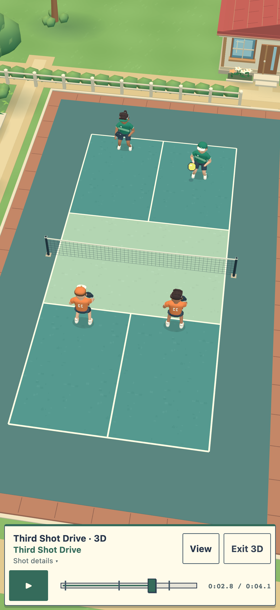
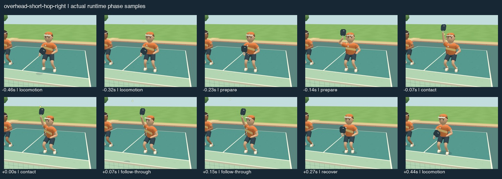
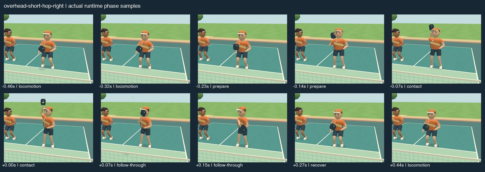
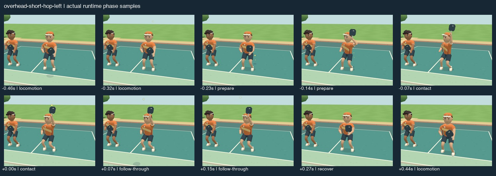
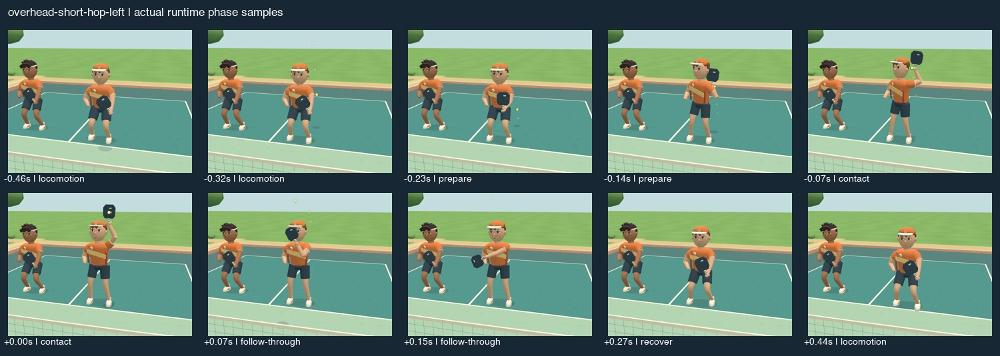
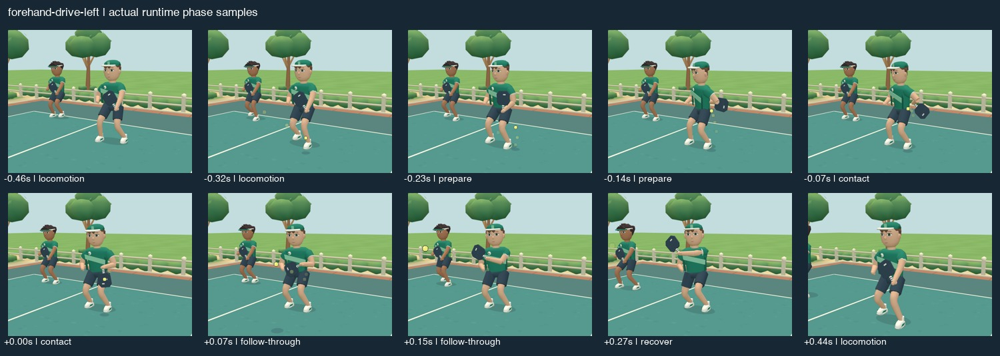
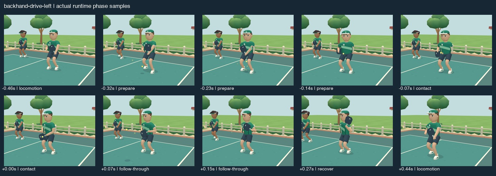
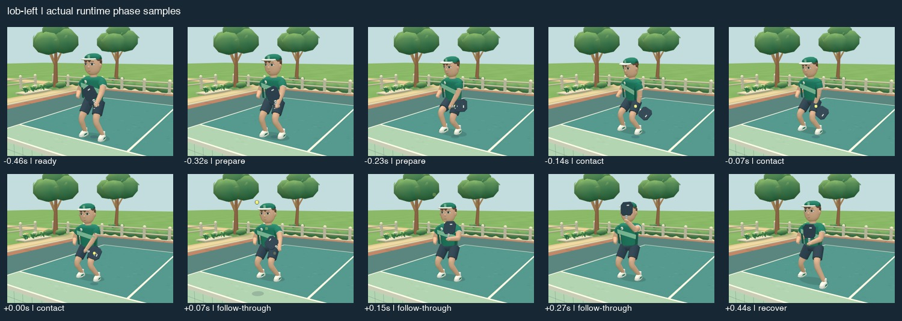

Actual local runtime captures compare the accepted environment baseline with the revised athletes. The village, court and lighting are retained. The original product name is restored on the sign and in the interface.
Slow clips replay at 0.25× simulation speed. They retain the original v29 stroke capture. The final v30 compatibility repair and verified left-handed examples appear below with their own evidence. Matching simulation samples support side-by-side pose inspection; they are not a measurement of physical display frame rate.
Library copies of these images and four concise clips were saved successfully. Original local files are retained in deliverables.
Each sheet samples preparation, contact, follow-through and recovery at the same offsets from authoritative ball contact.



The builder permits an overhead with Short hop selected. Its compiled high contact conflicts with the rally rule validator, but existing saved documents still need coherent playback. The final repair uses the authored overhead pose while preserving the original ball path and timing. These fresh captures verify the actual rendered handedness. Independent review · Compatibility findings




These fresh captures assert the actual player and rig handedness on every frame. They supersede older left-labelled visual evidence affected by the capture harness's load ordering.


